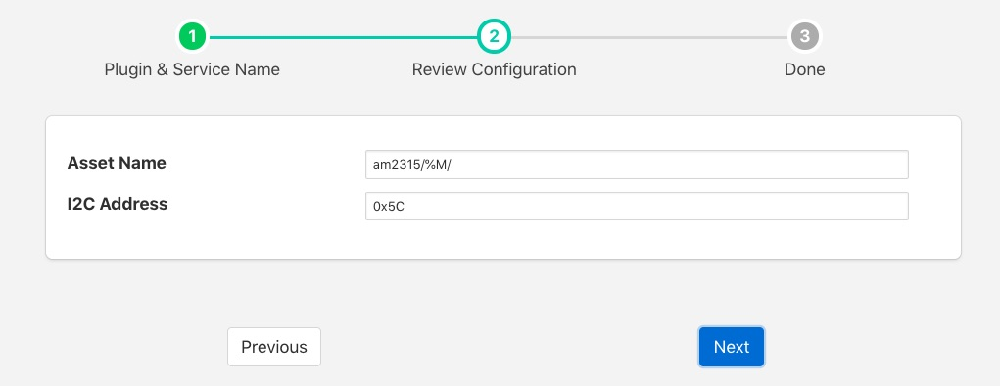

AM2315 Temperature & Humidity Sensor¶

The foglamp-south-am2315 is a south plugin for a temperature and humidity sensor. The sensor connects via the I2C bus and can provide temperature data in the range -40oC to +125oC with an accuracy of 0.1oC.
The plugin will produce a single asset that has two data points; temperature and humidity.
Note
The AM2315 is only available on the Raspberry Pi as it requires an I2C bus connection
To create a south service with the AM2315 plugin
- Click on South in the left hand menu bar
- Select am2315 from the plugin list
- Name your service and click Next

- Configure the plugin
- Asset Name: The name of the asset that will be created. To help when multiple AM2315 sensors are used a %M may be added to the asset name. This will be replaced with the I2C address of the sensor.
- I2C Address: The I2C address of the sensor, this allows multiple sensors to be added to the same I2C bus.
- Click Next
- Enable the service and click on Done
Wiring The Sensor¶
The following table details the four connections that must be made from the sensor to the Raspberry Pi GPIO connector.
| Colour | Name | GPIO Pin | Description |
|---|---|---|---|
| Red | VDD | Pin 2 (5V) | Power (3.3V - 5V) |
| Yellow | SDA | Pin 3 (SDA) | Serial Data |
| Black | GND | Pin 6 (GND) | Ground |
| White | SCL | Pin 5 (SCL) | Serial Clock |